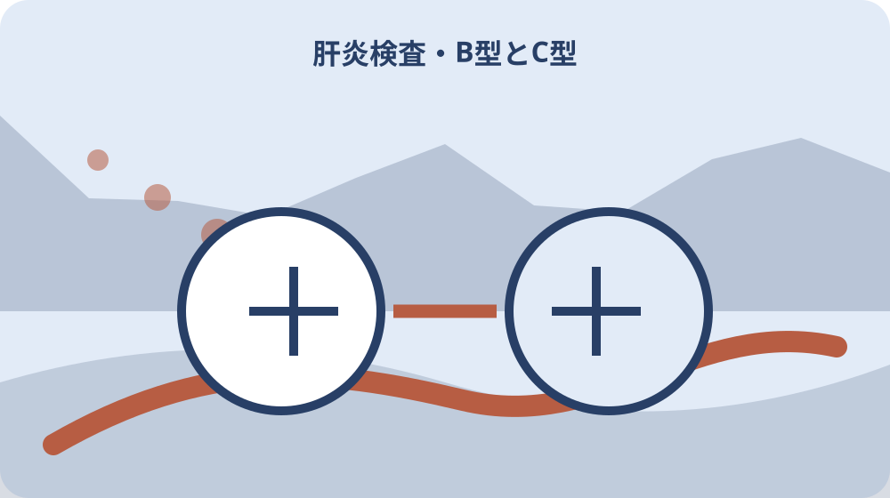

先に結論を確認する
この記事の答え：B型・C型の検査歴、受診日、結果説明、次の相談先を混同せず確認したいため、対象、基準日、公式資料、未確認事項を最初の一行へ置きます。
森町で最初に照合する条件：森町公式の二つの異なる案内を2026-08-13に確認する
検査歴を記憶だけで決めない
『検査歴を記憶だけで決めない』を調べる場面では、検査歴を記憶だけで決めないでは、まず森町の大人向け健康ページは令和8年度の健康診査や集団健診を案内しています。『検査歴を記憶だけで決めない』を調べる場面では、この事実を出発点に、対象者・対象物・確認日を同じ行へ置きます。『検査歴を記憶だけで決めない』を調べる場面では、森町で肝炎ウイルス検査の受診歴を一回ずつ確認するの判断を口頭だけで進めず、根拠となるページ名と更新日も併記してください。
『検査歴を記憶だけで決めない』を調べる場面では、公式案内の共通条件と、手元の個別事情を二列に分けます。『検査歴を記憶だけで決めない』を調べる場面では、森町の大人向け健康ページは令和8年度の健康診査や集団健診を案内していますという根拠は左へ、検査歴を記憶だけで決めないでまだ調べる対象は右へ置き、ページ本文から読み取れない事情を補いません。
『検査歴を記憶だけで決めない』を調べる場面では、原資料の名称と確認日を記したら、数字・人名・物件番号を原文のまま転記します。『検査歴を記憶だけで決めない』を調べる場面では、B型とC型を別の欄にするへ移る前に、森町へ尋ねる質問を一つだけ決め、回答欄を空けて待ちます。
『検査歴を記憶だけで決めない』を調べる場面では、この節は、対象が一意に決まり、根拠URLへ戻れ、次の担当が読める状態で終了です。『検査歴を記憶だけで決めない』を調べる場面では、検査歴を記憶だけで決めないに未確認があれば、結論欄ではなく再確認日の欄を埋めます。
『検査歴を記憶だけで決めない』を調べる場面では、1番目の確認として『検査歴を記憶だけで決めない』を保存するときは、根拠となる『森町の大人向け健康ページは令和8年度の健康診査や集団健診を案内しています』と今回の対象を一本の線で結びます。『検査歴を記憶だけで決めない』を調べる場面では、資料の写しには取得日、個別メモには記入者、問い合わせ結果には回答日を付け、次に読む人が公式事実と家族の判断を取り違えない状態にしてください。
B型とC型を別の欄にする
『B型とC型を別の欄にする』用の一件表に、手元の書類を開いたら、B型とC型を別の欄にするに関係する名称、番号、日付を原文どおり写します。『B型とC型を別の欄にする』用の一件表に、略称や家族の呼び名へ置き換える前に、森町は肝炎の多くがB型・C型肝炎ウイルスによると案内していますという公式案内と一致する欄を見つけることが重要です。
『B型とC型を別の欄にする』用の一件表に、ここでは『森町は肝炎の多くがB型・C型肝炎ウイルスによると案内しています』を確認線にします。『B型とC型を別の欄にする』用の一件表に、家族の記憶と公式記載が違うときは両方を残し、B型とC型を別の欄にするの判断材料として同じ意味に丸めないでください。
『B型とC型を別の欄にする』用の一件表に、書類の版、発行元、対象期間を余白へ書くと、後日の更新と区別できます。『B型とC型を別の欄にする』用の一件表に、続く過去の健診結果票を探すで必要になる資料だけを抜き出し、原本の束は崩さず保管します。
『B型とC型を別の欄にする』用の一件表に、作業者は確認した日時と方法を署名代わりに残します。『B型とC型を別の欄にする』用の一件表に、B型とC型を別の欄にするの答えが出ない場合も、調査経路が見えるなら一段階は完了です。
『B型とC型を別の欄にする』用の一件表に、2番目の確認として『B型とC型を別の欄にする』を保存するときは、根拠となる『森町は肝炎の多くがB型・C型肝炎ウイルスによると案内しています』と今回の対象を一本の線で結びます。『B型とC型を別の欄にする』用の一件表に、資料の写しには取得日、個別メモには記入者、問い合わせ結果には回答日を付け、次に読む人が公式事実と家族の判断を取り違えない状態にしてください。
過去の健診結果票を探す
『過去の健診結果票を探す』の対象について、この段階の要点は、肝炎は自覚症状が出ないことが多いと森町が注意を促しています。『過去の健診結果票を探す』の対象について、対象外かもしれない情報まで結論に混ぜず、確認できた範囲を枠で囲みます。『過去の健診結果票を探す』の対象について、次の窓口へ渡す際は、何を見て判断したかが一目で戻れる形にします。
『過去の健診結果票を探す』の対象について、過去の健診結果票を探すの判断は制度名ではなく対象の一致で行います。『過去の健診結果票を探す』の対象について、肝炎は自覚症状が出ないことが多いと森町が注意を促していますを参照しつつ、氏名・住所・年月・設備位置のうち記事に必要な識別子だけを確認票へ写します。
『過去の健診結果票を探す』の対象について、窓口へ伝える文章は、現状、知りたいこと、持参できる資料の順に組み立てます。『過去の健診結果票を探す』の対象について、森町の健診案内から受付を確認するへ渡す値を一つに絞ると、質問が別制度へ広がりません。
『過去の健診結果票を探す』の対象について、確認済みには根拠資料、対象外には理由、未確認には連絡先を付けます。『過去の健診結果票を探す』の対象について、三つの欄が埋まれば、過去の健診結果票を探すを家族へ引き継げます。
『過去の健診結果票を探す』の対象について、3番目の確認として『過去の健診結果票を探す』を保存するときは、根拠となる『肝炎は自覚症状が出ないことが多いと森町が注意を促しています』と今回の対象を一本の線で結びます。『過去の健診結果票を探す』の対象について、資料の写しには取得日、個別メモには記入者、問い合わせ結果には回答日を付け、次に読む人が公式事実と家族の判断を取り違えない状態にしてください。
森町の健診案内から受付を確認する
『森町の健診案内から受付を確認する』へ進む前に、森町の健診案内から受付を確認するを実行するときは、公式案内にある『肝炎を放置すると肝硬変や肝がんへ進むおそれがあると案内されています』を基準にします。『森町の健診案内から受付を確認する』へ進む前に、手続名が似ていても目的や起算日が違うため、一件の記録へ詰め込まず、証明・申請・現地確認を別行で管理します。
『森町の健診案内から受付を確認する』へ進む前に、『肝炎を放置すると肝硬変や肝がんへ進むおそれがあると案内されています』は全員に同じ結果を保証する文ではありません。『森町の健診案内から受付を確認する』へ進む前に、森町の健診案内から受付を確認するでは、公式条件に自分の対象が当てはまるかを一項目ずつ照合します。
『森町の健診案内から受付を確認する』へ進む前に、期限が見える資料には取得日も添えます。『森町の健診案内から受付を確認する』へ進む前に、次の自覚症状の有無で検査要否を決めないで古い数字を再利用しないよう、確認時点を日付で囲んでください。
『森町の健診案内から受付を確認する』へ進む前に、この場で決められない個別条件は窓口確認へ回します。『森町の健診案内から受付を確認する』へ進む前に、森町の健診案内から受付を確認するを推測で完了扱いにせず、回答者と回答日まで入った時点で確定にします。
『森町の健診案内から受付を確認する』へ進む前に、4番目の確認として『森町の健診案内から受付を確認する』を保存するときは、根拠となる『肝炎を放置すると肝硬変や肝がんへ進むおそれがあると案内されています』と今回の対象を一本の線で結びます。『森町の健診案内から受付を確認する』へ進む前に、資料の写しには取得日、個別メモには記入者、問い合わせ結果には回答日を付け、次に読む人が公式事実と家族の判断を取り違えない状態にしてください。

自覚症状の有無で検査要否を決めない
『自覚症状の有無で検査要否を決めない』の資料欄には、自覚症状の有無で検査要否を決めないでは、まずウイルス感染の有無は肝炎ウイルス検査で確認する必要があります。『自覚症状の有無で検査要否を決めない』の資料欄には、この事実を出発点に、対象者・対象物・確認日を同じ行へ置きます。『自覚症状の有無で検査要否を決めない』の資料欄には、森町で肝炎ウイルス検査の受診歴を一回ずつ確認するの判断を口頭だけで進めず、根拠となるページ名と更新日も併記してください。
『自覚症状の有無で検査要否を決めない』の資料欄には、まずウイルス感染の有無は肝炎ウイルス検査で確認する必要がありますを確認票の見出し下へ引用せず要約します。『自覚症状の有無で検査要否を決めない』の資料欄には、その下に自覚症状の有無で検査要否を決めないの対象番号を置けば、一般案内と今回の一件を混同しにくくなります。
『自覚症状の有無で検査要否を決めない』の資料欄には、写真や画面保存には撮影方向・取得日・ページ名を付けます。『自覚症状の有無で検査要否を決めない』の資料欄には、出産・手術歴は医師へ事実だけ伝えるで照合するとき、同名の別資料を開いても違いを見つけられます。
『自覚症状の有無で検査要否を決めない』の資料欄には、完了印を付ける前に、別の家族が同じ対象へ到達できるか試します。『自覚症状の有無で検査要否を決めない』の資料欄には、迷った箇所は自覚症状の有無で検査要否を決めないの備考へ戻し、判断語を削ります。
『自覚症状の有無で検査要否を決めない』の資料欄には、5番目の確認として『自覚症状の有無で検査要否を決めない』を保存するときは、根拠となる『ウイルス感染の有無は肝炎ウイルス検査で確認する必要があります』と今回の対象を一本の線で結びます。『自覚症状の有無で検査要否を決めない』の資料欄には、資料の写しには取得日、個別メモには記入者、問い合わせ結果には回答日を付け、次に読む人が公式事実と家族の判断を取り違えない状態にしてください。
出産・手術歴は医師へ事実だけ伝える
『出産・手術歴は医師へ事実だけ伝える』を照合するとき、手元の書類を開いたら、出産・手術歴は医師へ事実だけ伝えるに関係する名称、番号、日付を原文どおり写します。『出産・手術歴は医師へ事実だけ伝える』を照合するとき、略称や家族の呼び名へ置き換える前に、まだ検査を受けたことがない人へ森町は検査受診を呼び掛けていますという公式案内と一致する欄を見つけることが重要です。
『出産・手術歴は医師へ事実だけ伝える』を照合するとき、出産・手術歴は医師へ事実だけ伝えるで扱う公式事実は『まだ検査を受けたことがない人へ森町は検査受診を呼び掛けています』です。『出産・手術歴は医師へ事実だけ伝える』を照合するとき、これに該当しない家族事情や現場状態は、別紙の個別確認欄へ移して根拠の種類を分けます。
『出産・手術歴は医師へ事実だけ伝える』を照合するとき、原本、写し、ウェブ画面は証拠力も更新方法も違います。『出産・手術歴は医師へ事実だけ伝える』を照合するとき、検査日と結果説明日を分けるへ進む際は、どの媒体を見たかまで記録してください。
『出産・手術歴は医師へ事実だけ伝える』を照合するとき、対象、時点、資料、次の連絡先が四点とも読めればこの節を閉じます。『出産・手術歴は医師へ事実だけ伝える』を照合するとき、出産・手術歴は医師へ事実だけ伝えるの結論だけを書いたメモは引継ぎ資料にしません。
検査日と結果説明日を分ける
『検査日と結果説明日を分ける』の質問票で、この段階の要点は、特定製剤によるC型肝炎給付金の請求期限は2028年1月17日です。『検査日と結果説明日を分ける』の質問票で、対象外かもしれない情報まで結論に混ぜず、確認できた範囲を枠で囲みます。『検査日と結果説明日を分ける』の質問票で、次の窓口へ渡す際は、何を見て判断したかが一目で戻れる形にします。
『検査日と結果説明日を分ける』の質問票で、資料上の条件を先に固定します。『検査日と結果説明日を分ける』の質問票で、今回は特定製剤によるC型肝炎給付金の請求期限は2028年1月17日ですが基準なので、検査日と結果説明日を分けるに関係する手元資料へ同じ用語があるかを探します。
『検査日と結果説明日を分ける』の質問票で、用語が一致しないときは勝手に言い換えず、双方の名称を並記します。『検査日と結果説明日を分ける』の質問票で、陽性時の相談先を結果票に添えるの窓口質問には、その差を短く添えます。
陽性時の相談先を結果票に添える
『陽性時の相談先を結果票に添える』の期限管理では、陽性時の相談先を結果票に添えるを実行するときは、公式案内にある『救済制度は特定の血液製剤投与による感染被害を対象にしています』を基準にします。『陽性時の相談先を結果票に添える』の期限管理では、手続名が似ていても目的や起算日が違うため、一件の記録へ詰め込まず、証明・申請・現地確認を別行で管理します。
『陽性時の相談先を結果票に添える』の期限管理では、救済制度は特定の血液製剤投与による感染被害を対象にしていますという案内から、今回確認すべき欄だけを抽出します。『陽性時の相談先を結果票に添える』の期限管理では、陽性時の相談先を結果票に添えると無関係な制度説明まで転記すると重要な差が埋もれるため、採用理由も一言添えます。
『陽性時の相談先を結果票に添える』の期限管理では、数字は単位と起算点を離しません。『陽性時の相談先を結果票に添える』の期限管理では、給付制度と一般検査を混同しないへ数値を渡すときは、誰の、何の、いつの数字かを一行で説明します。
給付制度と一般検査を混同しない
『給付制度と一般検査を混同しない』を家族で見るなら、給付制度と一般検査を混同しないでは、まず検査受診と特定製剤による給付金請求は目的の異なる手続です。『給付制度と一般検査を混同しない』を家族で見るなら、この事実を出発点に、対象者・対象物・確認日を同じ行へ置きます。『給付制度と一般検査を混同しない』を家族で見るなら、森町で肝炎ウイルス検査の受診歴を一回ずつ確認するの判断を口頭だけで進めず、根拠となるページ名と更新日も併記してください。
『給付制度と一般検査を混同しない』を家族で見るなら、この節の根拠は検査受診と特定製剤による給付金請求は目的の異なる手続ですです。『給付制度と一般検査を混同しない』を家族で見るなら、給付制度と一般検査を混同しないでは、公式の対象範囲と実物の状態を別の色で記し、資料だけで現地確認を済ませません。
『給付制度と一般検査を混同しない』を家族で見るなら、問い合わせで得た回答は、質問文と組にして保存します。『給付制度と一般検査を混同しない』を家族で見るなら、請求期限など変動情報を再確認するに関する別回答と混ざらないよう、担当部署も同じ行へ置きます。
請求期限など変動情報を再確認する
『請求期限など変動情報を再確認する』の更新確認時に、手元の書類を開いたら、請求期限など変動情報を再確認するに関係する名称、番号、日付を原文どおり写します。『請求期限など変動情報を再確認する』の更新確認時に、略称や家族の呼び名へ置き換える前に、森町の健康づくり係の電話番号は0538-85-6330ですという公式案内と一致する欄を見つけることが重要です。
『請求期限など変動情報を再確認する』の更新確認時に、請求期限など変動情報を再確認するの入口では、森町の健康づくり係の電話番号は0538-85-6330ですを現在の公式条件として採用します。『請求期限など変動情報を再確認する』の更新確認時に、過去の案内を持つ場合は上書きせず、旧版として横へ残してください。
『請求期限など変動情報を再確認する』の更新確認時に、更新差を見つけたら、実行予定日より前に窓口へ確認します。『請求期限など変動情報を再確認する』の更新確認時に、大石の視点：未確認を未受診と書かないの作業日は、回答後に決める方が手戻りを減らせます。
大石の視点：未確認を未受診と書かない
『大石の視点：未確認を未受診と書かない』という実務提案では、この段階の要点は、厚生労働省は肝炎ウイルス検査と相談支援を国の肝炎対策として案内しています。『大石の視点：未確認を未受診と書かない』という実務提案では、対象外かもしれない情報まで結論に混ぜず、確認できた範囲を枠で囲みます。『大石の視点：未確認を未受診と書かない』という実務提案では、次の窓口へ渡す際は、何を見て判断したかが一目で戻れる形にします。
『大石の視点：未確認を未受診と書かない』という実務提案では、公的事実と私の提案を混ぜません。『大石の視点：未確認を未受診と書かない』という実務提案では、厚生労働省は肝炎ウイルス検査と相談支援を国の肝炎対策として案内していますは資料で確認できる内容であり、大石の視点：未確認を未受診と書かないを一行管理する方法は私、大石浩之の実務提案です。
『大石の視点：未確認を未受診と書かない』という実務提案では、提案は森町や所管機関の公式見解ではありません。『大石の視点：未確認を未受診と書かない』という実務提案では、受診歴カードを医療相談へ持参するへ進む順序も個別事情で変わるため、担当窓口の回答を優先します。
受診歴カードを医療相談へ持参する
『受診歴カードを医療相談へ持参する』の最終点検として、受診歴カードを医療相談へ持参するを実行するときは、公式案内にある『B型とC型では検査項目が異なるため結果票を区別して保管します』を基準にします。『受診歴カードを医療相談へ持参する』の最終点検として、手続名が似ていても目的や起算日が違うため、一件の記録へ詰め込まず、証明・申請・現地確認を別行で管理します。
『受診歴カードを医療相談へ持参する』の最終点検として、最後にB型とC型では検査項目が異なるため結果票を区別して保管しますをもう一度原資料で照合します。『受診歴カードを医療相談へ持参する』の最終点検として、受診歴カードを医療相談へ持参するの記録が制度の説明だけになっていないか、今回の対象を示す番号や日付があるかを確認してください。
『受診歴カードを医療相談へ持参する』の最終点検として、検査歴を記憶だけで決めないへ引き継ぐ資料は、最新版、旧版、個別証拠の三束に分けます。『受診歴カードを医療相談へ持参する』の最終点検として、紛失防止のため保管場所とファイル名も一覧へ入れます。